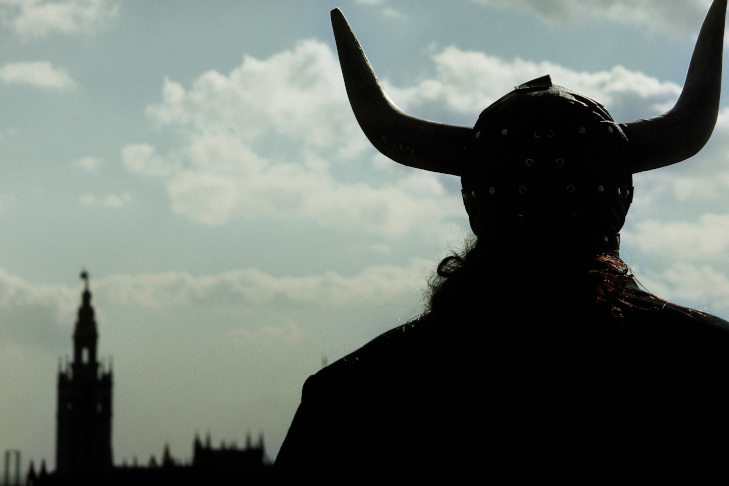

INICIO
BIOGRAFIA
PORTAFOLIO
CONTACTO

Mi nombre es
Rubén Ruiz Ganga
, nacido en Sevilla criado en otro lugar. Persona de muchas pasiones y unas pocas obsesiones como la
escritura
, la literatura y otras expresiones artísticas.